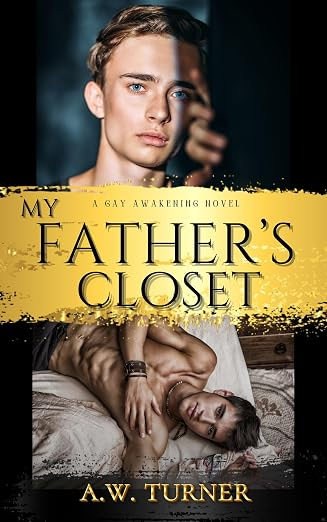
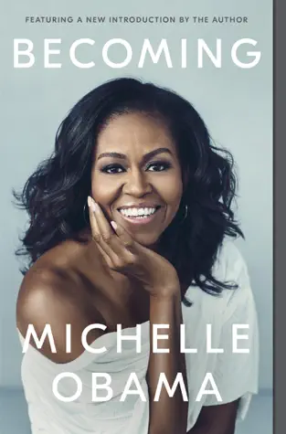
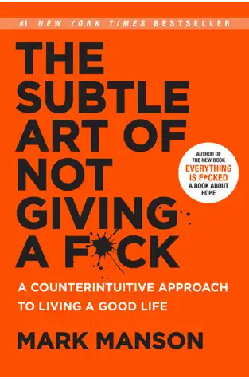
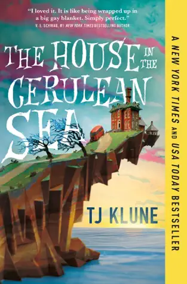

Jack's Book Club
Required reading to survive the systemic friction and escape the chaos.

#1 Breakthrough Novel
Robbie thought he knew his father. Until grief cracked open a drawer full of secrets… and a truth he never saw coming. Four years after his dad’s death, Robbie is still navigating the wreckage: a job he hates, a brother who won’t grow up, and a mother slipping into memory loss. But when a series of explicit discoveries reveal a hidden side of his father’s life — one that includes gay p0rn, paid encounters, and a connection to a man named Ashton, Robbie’s world tilts again. As he searches for answers, Robbie begins to question everything: his family, his identity, and the boundaries of love. Then he meets Ashton — confident, unapologetic, and intimately tied to the past Robbie’s trying to understand. What begins as curiosity becomes something deeper. Something dangerous. Something healing.
A story of grief, sexuality, and the messy beauty of acceptance, My Fathers Closet is a raw, tender, and darkly funny exploration of what it means to truly know someone… and yourself.

An intimate, powerful, and inspiring memoir by the former First Lady of the United States
#1 NEW YORK TIMES BESTSELLER • WATCH THE EMMY-NOMINATED NETFLIX ORIGINAL DOCUMENTARY • OPRAH’S BOOK CLUB PICK • NAACP IMAGE AWARD WINNER • ONE OF ESSENCE’S 50 MOST IMPACTFUL BLACK BOOKS OF THE PAST 50 YEARS
In a life filled with meaning and accomplishment, Michelle Obama has emerged as one of the most iconic and compelling women of our era. As First Lady of the United States of America—the first African American to serve in that role—she helped create the most welcoming and inclusive White House in history, while also establishing herself as a powerful advocate for women and girls in the U.S. and around the world, dramatically changing the ways that families pursue healthier and more active lives, and standing with her husband as he led America through some of its most harrowing moments. Along the way, she showed us a few dance moves, crushed Carpool Karaoke, and raised two down-to-earth daughters under an unforgiving media glare.
In her memoir, a work of deep reflection and mesmerizing storytelling, Michelle Obama invites readers into her world, chronicling the experiences that have shaped her—from her childhood on the South Side of Chicago to her years as an executive balancing the demands of motherhood and work, to her time spent at the world’s most famous address. With unerring honesty and lively wit, she describes her triumphs and her disappointments, both public and private, telling her full story as she has lived it—in her own words and on her own terms. Warm, wise, and revelatory, Becoming is the deeply personal reckoning of a woman of soul and substance who has steadily defied expectations—and whose story inspires us to do the same.

#1 New York Times Bestseller • More than 10 million Copies Sold
For decades, we’ve been told that positive thinking is the key to a happy, rich life. "F**k positivity," Mark Manson says. "Let’s be honest, shit is f**ked and we have to live with it." In his wildly popular Internet blog, Manson doesn’t sugarcoat or equivocate. He tells it like it is—a dose of raw, refreshing, honest truth that is sorely lacking today. The Subtle Art of Not Giving a F**k is his antidote to the coddling, let’s-all-feel-good mindset that has infected modern society and spoiled a generation, rewarding them with gold medals just for showing up.
Manson makes the argument, backed both by academic research and well-timed poop jokes, that improving our lives hinges not on our ability to turn lemons into lemonade, but on learning to stomach lemons better. Human beings are flawed and limited—"not everybody can be extraordinary, there are winners and losers in society, and some of it is not fair or your fault." Manson advises us to get to know our limitations and accept them. Once we embrace our fears, faults, and uncertainties, once we stop running and avoiding and start confronting painful truths, we can begin to find the courage, perseverance, honesty, responsibility, curiosity, and forgiveness we seek.
There are only so many things we can give a f**k about so we need to figure out which ones really matter, Manson makes clear. While money is nice, caring about what you do with your life is better, because true wealth is about experience. A much-needed grab-you-by-the-shoulders-and-look-you-in-the-eye moment of real-talk, filled with entertaining stories and profane, ruthless humor, The Subtle Art of Not Giving a F*ck is a refreshing slap for a generation to help them lead contented, grounded lives.
“The Last Letter is a haunting, heartbreaking and ultimately inspirational love story.“—InTouch Weekly
Beckett,
I need one thing from you: get out of the army and get to Telluride.
My little sister Ella’s raising the twins alone. She’s too independent and won’t accept help easily, but she has lost our grandmother, our parents, and now me. It’s too much for anyone to endure. It’s not fair.
And here’s the kicker: there’s something else you don’t know that’s tearing her family apart. She’s going to need help.
So if I’m gone, that means I can’t be there for Ella. I can’t help them through this. But you can. So I’m begging you, as my best friend, go take care of my sister, my family.
Please don’t make her go through it alone.
Ryan

Linus Baker is a by-the-book case worker in the Department in Charge of Magical Youth. He's tasked with determining whether six dangerous magical children are likely to bring about the end of the world.
Arthur Parnassus is the master of the orphanage. He would do anything to keep the children safe, even if it means the world will burn. And his secrets will come to light.
The House in the Cerulean Sea is an enchanting love story, masterfully told, about the profound experience of discovering an unlikely family in an unexpected place—and realizing that family is yours.